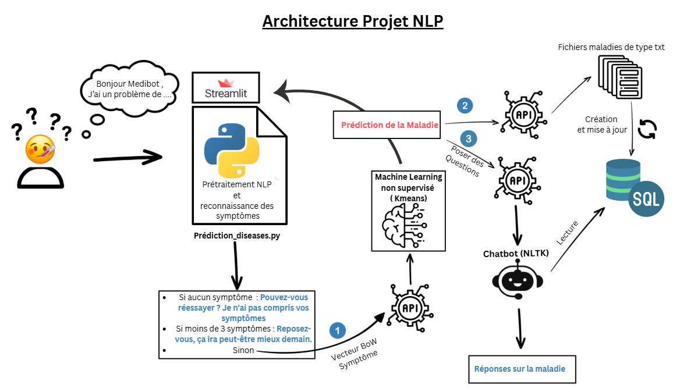
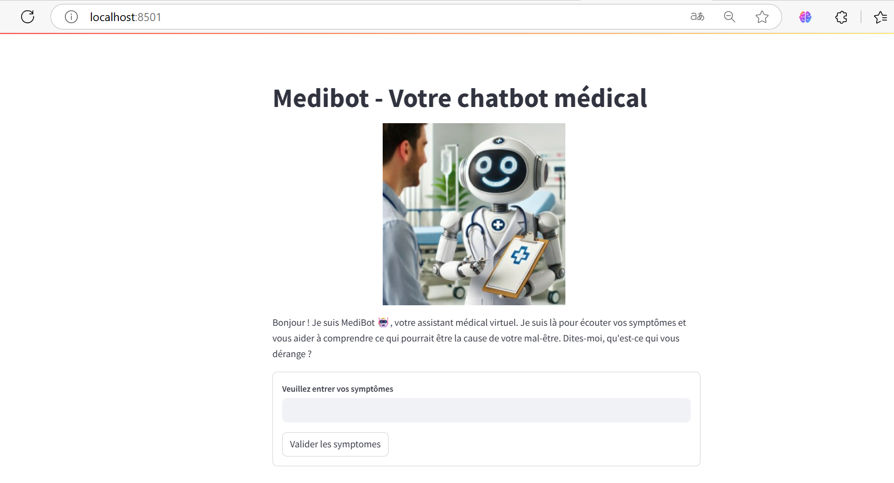
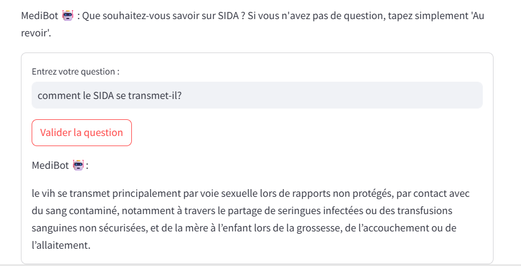

NLTK → Vectorisation (BoW / TF‑IDF) → KMeans → FastAPI → Streamlit NLTK → Vectorization (BoW / TF‑IDF) → KMeans → FastAPI → Streamlit
Medibot analyse des descriptions de symptômes en langage naturel, prédit la pathologie probable via KMeans, puis répond aux questions grâce à une base de connaissances médicale structurée. Objectif : fournir une orientation préliminaire fiable dans un contexte de surcharge des systèmes de santé. Medibot analyzes free‑text symptom descriptions, predicts the likely condition with KMeans, and answers follow‑up questions from a structured medical knowledge base. Goal: provide a reliable preliminary guidance under healthcare overload.
RegexpTokenizer), vectorisation BoW et
TF‑IDF
NLP pipeline: cleaning (stopwords), tokenization
(RegexpTokenizer), BoW & TF‑IDF
vectorization

Architecture globale – Prétraitement → Vectorisation → Clustering → Q&A Global architecture – Preprocess → Vectorize → Cluster → Q&A
RegexpTokenizer, stopwords, lemmatisationNLTK preprocessing: RegexpTokenizer,
stopwords, lemmatization| ScriptScript | RôleRole |
|---|---|
Prediction_diseases.py |
Interface Streamlit • point d’entrée utilisateur • vectorisation & affichageStreamlit UI • user entry point • vectorization & display |
API_BD.py |
Création/MAJ base SQLite sante.db depuis des fichiers maladiesCreate/update SQLite DB sante.db from disease text files |
API_Disease_Prediction.py |
API de prédiction via KMeans (features symptoms → cluster)Disease prediction API via KMeans |
API_Chatbot.py |
API Q&A : similarité cosinus sur TF‑IDF pour extraire la meilleure réponseQ&A API: TF‑IDF + cosine similarity to select best answer |
Les composants sont découpés pour faciliter le test et le déploiement séparé.Components are split for easier testing and separate deployment.
Textes médicaux indexés dans SQLite et interrogés par l’API chatbot.Medical texts stored in SQLite and queried by the chatbot API.
RegexpTokenizer, stopwords, lemmatisation| HTTP | EndpointEndpoint | DescriptionDescription |
|---|---|---|
| POST | /creer-bdd |
Initialise/Met à jour la base SQLite depuis les fichiers maladiesInitialize/Update SQLite DB from disease text files |
| POST | /Kmeans |
Prédit la maladie probable à partir des symptômesPredict likely disease from symptoms |
| POST | /Q&A_Chatbot / /question
|
Retourne la meilleure réponse sur la base de connaissancesReturns the best matching answer from the knowledge base |
Les noms d’endpoint peuvent varier selon l’implémentation ; l’architecture reste identique.Endpoint names may vary per implementation; the architecture remains the same.
# 1) Construire/mettre à jour la base
curl -X POST http://localhost:8000/creer-bdd
# 2) Prédire une maladie (symptômes simplifiés)
curl -X POST http://localhost:8001/Kmeans \
-H "Content-Type: application/json" \
-d '{"symptomes": ["fièvre", "toux", "fatigue"]}'
# 3) Poser une question au chatbot
curl -X POST http://localhost:8002/Q\&A_Chatbot \
-H "Content-Type: application/json" \
-d '{"question": "Quels sont les symptômes typiques ?", "maladie": "Grippe"}'


Simulation patient ↔ Medibot (Streamlit + APIs).Simulated patient ↔ Medibot (Streamlit + APIs).
pip install -r requirements.txt
uvicorn API_BD:app3 --reload --port 8000, puis
POST /creer-bdd
uvicorn API_Disease_Prediction:app --reload --port 8001uvicorn API_Chatbot:app2 --reload --port 8002streamlit run Prediction_diseases.pyMedibot n’est pas un dispositif médical. Les réponses sont informatives et ne remplacent pas un avis médical professionnel.Medibot is not a medical device. Answers are informational and do not replace professional medical advice.
De la saisie libre aux clusters symptoms→pathologie en quelques centaines de ms.Free‑text to symptoms→condition clusters in a few hundred ms.
Chaque réponse renvoie à une phrase source de la base (TF‑IDF + cosinus).Each answer points to a source sentence (TF‑IDF + cosine).
APIs indépendantes (DB, KMeans, Chatbot) + UI Streamlit → maintenance facilitée.Independent APIs (DB, KMeans, Chatbot) + Streamlit UI → easier maintenance.